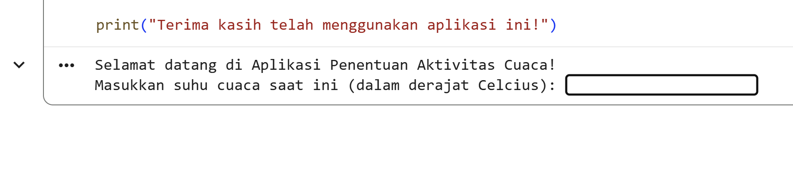
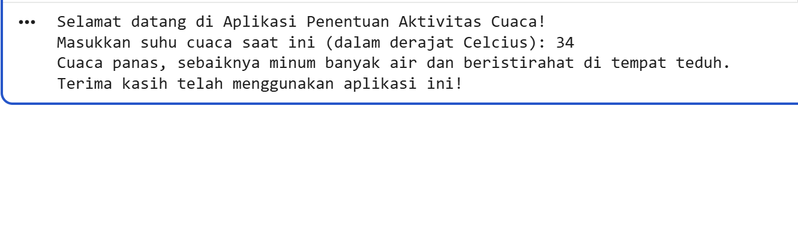
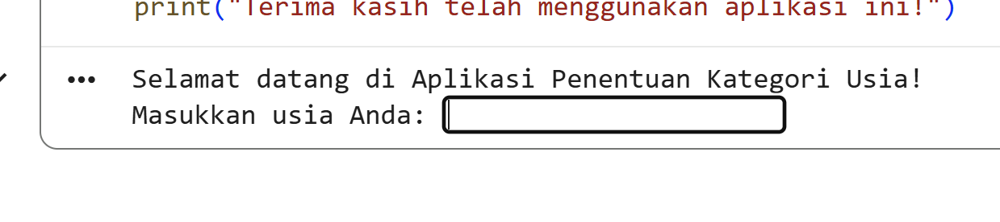
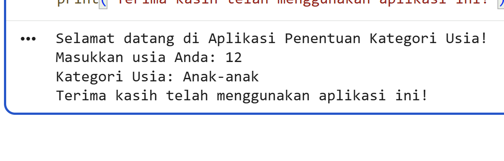
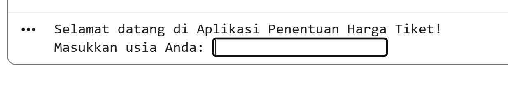
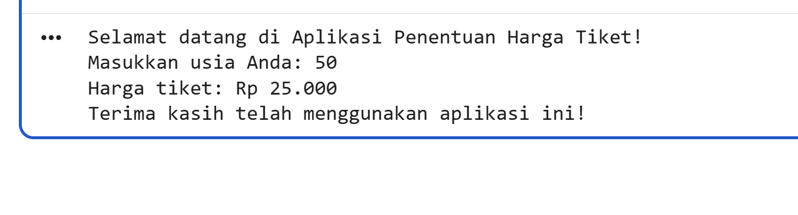

Sumatif Tengah Semester • ❗Absen dari 1-10 (tipe soal 1) ❗Absen dari 11-20 (tipe soal 2) ❗Absen dari 21-30 (tipe soal 3)❗
📋 Pilih Tipe Soal Project
1. Aplikasi Penentuan Aktivitas Berdasarkan Cuaca
Input suhu (°C) → rekomendasi: dingin (istirahat), sejuk (jalan), hangat (olahraga), panas (minum).
if/else dasar
2. Aplikasi Penentuan Kategori Usia
Input usia → kategori: Balita (0-4), Anak-anak (5-12), Remaja (13-17), Dewasa (18-59), Lansia (≥60).
if/else rantai
3. Aplikasi Penentuan Harga Tiket
Input usia → harga: Anak-anak (0-12) Rp10.000, Dewasa (13-59) Rp25.000, Lansia (≥60) Rp15.000.
if/else & perhitungan
Detail Project 1: Aplikasi Penentuan Aktivitas Berdasarkan Cuaca
Deskripsi: Aplikasi menentukan aktivitas berdasarkan suhu yang dimasukkan. Hanya menggunakan if/else.
Kategori Suhu:
< 10°C : Istirahat di dalam rumah
10–20°C : Jalan-jalan di luar
21–30°C : Olahraga di luar
> 30°C : Minum banyak air & istirahat
📝 Catatan: Karena sulit mengetik simbol derajat, cukup tulis "derajat" saat meminta input. Contoh: "Masukkan suhu cuaca saat ini (dalam derajat Celcius):"
Contoh Output Program:
Selamat datang di Aplikasi Penentuan Aktivitas Cuaca!
Masukkan suhu cuaca saat ini (dalam derajat Celcius): 30
Cuaca hangat, saat yang tepat untuk berolahraga di luar!
Terima kasih telah menggunakan aplikasi ini!
Dokumentasi: Laporan, flowchart, kode (dengan komentar), contoh input/output.
Batasan: Hanya if/else, tanpa fungsi/list. Input dalam Celcius.
📷 Contoh Hasil Project 1

Output Program Cuaca
Tampilan program penentuan aktivitas berdasarkan suhu.

Output Program Cuaca
Contoh Tampilan ketika user memasukan inputan 34.
Detail Project 2: Aplikasi Penentuan Kategori Usia
Deskripsi: Aplikasi menentukan kategori usia berdasarkan input tahun. Menggunakan if/else untuk memeriksa rentang.
Kategori Usia:
Balita: 0 - 4 tahun
Anak-anak: 5 - 12 tahun
Remaja: 13 - 17 tahun
Dewasa: 18 - 59 tahun
Lansia: 60 tahun ke atas
Contoh Output Program:
Selamat datang di Aplikasi Penentuan Kategori Usia!
Masukkan usia Anda: 2
Kategori Usia: Balita
Terima kasih telah menggunakan aplikasi ini!
Contoh Lain: Usia 10 → "Anak-anak", Usia 65 → "Lansia".
Dokumentasi: Laporan, flowchart, kode (dengan komentar).
📷 Contoh Hasil Project 2

Output Program Kategori Usia
Tampilan program penentuan kategori usia.

Output Program Kategori Usia
Contoh Tampilan ketika user memasukan inputan 12.
Detail Project 3: Aplikasi Penentuan Harga Tiket
Deskripsi: Aplikasi menghitung harga tiket berdasarkan usia pengguna. Harga berbeda tiap kategori.
Kategori Harga:
Anak-anak (0-12 tahun): Rp 10.000
Dewasa (13-59 tahun): Rp 25.000
Lansia (60 tahun ke atas): Rp 15.000
Contoh Output Program:
Selamat datang di Aplikasi Penentuan Harga Tiket!
Masukkan usia Anda: 34
Harga tiket: Rp 25.000
Terima kasih telah menggunakan aplikasi ini!
Contoh Lain: Usia 10 → Rp10.000, Usia 70 → Rp15.000.
Dokumentasi: Laporan, flowchart, kode dengan penjelasan.
📷 Contoh Hasil Project 3

Output Program Harga Tiket
Tampilan terminal saat menjalankan program penentuan harga tiket.

Output Program Harga Tiket
Contoh Tampilan ketika user memasukan inputan
📄 Kerangka Laporan (Format Msword,Gdocs/pdf)
Setiap project harus disertai laporan dengan struktur berikut. Laporan diketik dalam format Microsoft Word,Google Dokumen atau Boleh Melalu Canva (.docx) dan dikumpulkan bersama file program. ❗Pengumpulan Laporan dan Code program dilakukan di google clasroom
Proses pembuatan aplikasi (langkah-langkah yang dilakukan).
Alasan memilih logika if/else dalam program.
Fitur tambahan (jika ada) yang membuat aplikasi lebih menarik.
Flowchart: Diagram alir program (dapat digambar menggunakan draw.io, Lucidchart, atau aplikasi lainnya, lalu disisipkan sebagai gambar).
Dokumentasi Kode: Kode Python lengkap yang telah dibuat, disertai komentar penjelasan di setiap bagian (misalnya penjelasan tentang kondisi if/else).
Contoh Input dan Output: Minimal 2 contoh hasil running program (dapat berupa screenshot atau teks yang menunjukkan input dan output yang dihasilkan).
Tips: Gunakan fitur "Insert > Picture" di Word untuk menyisipkan flowchart. Untuk kode Python, bisa menggunakan format teks biasa atau menggunakan gaya kode dengan font monospace (misalnya Courier New).